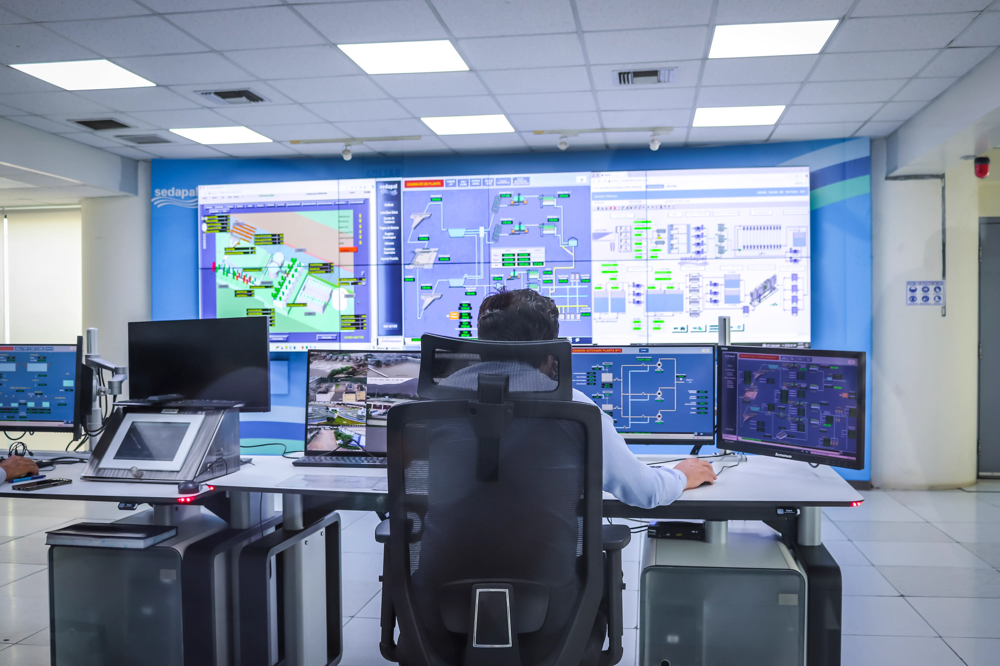

Food for Thought
Modernization
Modernization of WIC
WIC began as a pilot program in 1972 and now serves families through a mixture of public health and nutrition services. Modernizing the program means adapting those services to the way people use government websites today. The Wisconsin Department of Health Services WIC website illustrates why this matters: when navigation differs from familiar website patterns, users may have more difficulty finding information, checking eligibility, applying, or scheduling an appointment. Nielsen’s usability principle supports designing around patterns that users already understand (Nielsen, 2000).
-
Online Comminications
- WHile meeting in person is a fundimental part of the WIC experience, online communications can beacuse a major part of imppliments for families whi ma y not have a the time to each out
-
Mobile App
- A mobile app could help see benifits, what is currently WIC approved, and helpful information ona website
-
Online Applications
- Applications could be pushed to an online and in person experiance allowling for ease of automation for those who may not beable to make it in
-
Real Time infomation
- Poeple could see when shudles are coming up, or when benfinsts have been deposited
What Could moderization help with
While modernization will help make WIC, more accessible, in person services should still remain an important part of the program. WIC provides more than just food benefits; it also provides nutritional education and individual advising. In person allow WIC staff to discuss a person needs, ask questions, explain recommendations, and adjust their help based on their circumstances. This personal internation can be difficult and shoulder be replaced. Modernization should just be a supplement for making WIC participation easier to access, than outright replacing human interaction altogether.